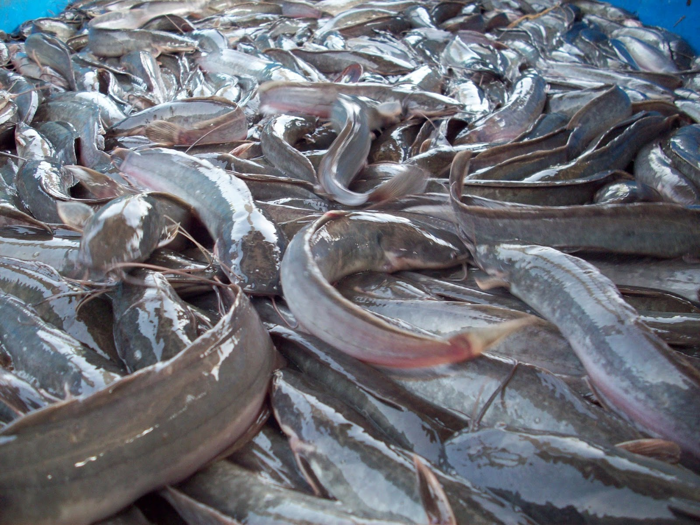

PANEN
Setelah bobot lele telah mencapai 125gram atau 1kg berisi sekitar 8 ekor lele tiba massa nya untuk memanen ikan lele yang kita budidayakan.
Kenapa demikian ? karena lele dengan ukuran tersebut yang sngat diminati di pasaran.

Prosess panen:
- Hubungi tengkulak daerah ada agar mudah dalam memasarkan lele yang kita panen.
- Panen sebaiknya dilakukan pada pagi atau sore hari agar lele tidak banyak yang mati kepanasan.
- Buang air kolam, sisakan sekitar 15CM
- Siapkan wadah untuk tangkapan lele.
- Tangkap ikan lele dengan menggunakan jaring agar tidak melukai tangan.
- Timbang lele, agar kita tau berapa total berat lele yang kita panen.